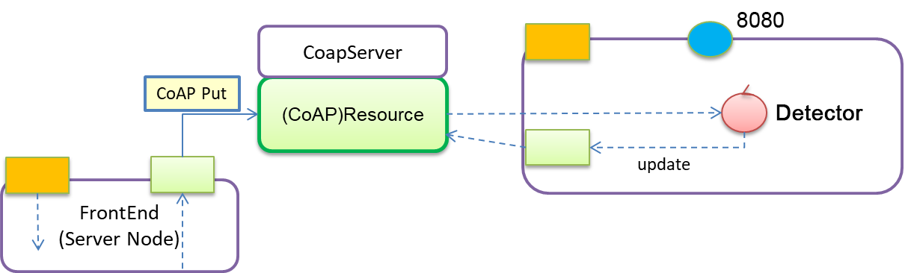
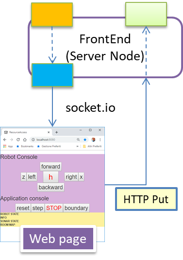

Requirements
Design and build a software system where a
detector, equipped with a local container (
detectorBox), is able to collect a plastic bottle positioned in front of it.
The system must be able to accept the following commands sent by the smart-phone of the
supervisor:
- explore: the detector must reach the bottle and collect it.
Requirement analysis
Functional TestPlan (Maicol)
Collect: The detector, positioned in an empty room with no obstacle, is able to move towards a bottle positioned in front of it and collect it.
Problem analysis
Basicrobot (Bondi)
The QAK model
Since we have to design a heterogeneous distributed system, and since the technology to implement the robot is not defined in the requirements, it is necessary to follow a technology-independent approach.
The software house already has a language developed ad hoc to solve the situation, the "qak" formalism, that is a meta-model represented in textual form used to expressing the structure, the interaction and the behavior of the software system. The meta-model "qak" defines in its conceptual space, the components of the software system as actors capable of exchanging messages of three types: dispatch, request, event.
The basicrobot.qak
The software house already has the code "basicrobot.qak" which already manages the situation to pilot a robot. The basicrobot actor receives the movement commands from the "detector" actor (that represents the robot's mind) and forwards them to the implementation of the robot that will execute them.
State work{
println("basicrobot waiting ... ")
}
Transition t0
whenMsg cmd -> handleCmd
whenEvent userCmd -> handleUserCmd
whenEvent obstacle -> handleObstacle
To do this, the basicrobot actor needs to delegate the transmission to another qak actor called "robotadapter" (which is a CodedQActor coded entirely in kotlin) with the specific function of using the proper configuration to interface with the relative implementation of the robot, that can be virtual or physical.
State handleCmd {
onMsg( cmd : cmd(X) ){
forward robotadapter -m cmd : cmd( $payloadArg(0 ) )
}
}
Goto work
The basicrobot also has the functionality of receiving "obstacle" events, following receipt of this event the robot enters a stop state and then switches to another state in which it moves away from the detected obstacle in order to be in a safety state.
State handleObstacle{
forward robotadapter -m cmd : cmd( h )
println(" basicrobot | stops (for safety) since obstacle ")
}
Goto movefarFromObstacle
State movefarFromObstacle{
println(" basicrobot | going back (to avoid event-generation) ")
forward robotadapter -m cmd : cmd( s )
delay 100
forward robotadapter -m cmd : cmd( h )
}
Goto work
Moving problematic (Detector) (Maicol)
We can assume that the robot is moving in a flat euclidean space.
The movement of the detector towards the bottle is already implemented in the set of basic commands provided by the basicrobot.
In particular is defined by the command 'w' that the detector will delegate to the basicrobot.
Communication problematic (Maicol, Christian)
The meta-model QAK provides the possibility of 3 different communication models:
- Fire and Forget: Simple communication but the components of the system must know each other.
- Request-Response: Same as Fire and Forget but also worse because of the quantity of messages sent.
- Event: Components don't need to know eachother, but it's more complicated to develop because it needs an infrastructure that supports this type of communication.
In the scenario of the interaction between the detector and the supervisor, after discussing with the client, it was concluded that a request response model is required.
The client explained that the detector must respond to the supervisor commands, but this will be further discussed in next SPRINT, for now what is decided to implement is a simple ACK response.
Application Message
A class Application message is provided within the QAK model.
This class defines a standard of communication, defining the template of the messages that are to be sent.
MQTT
The meta-model QAK gives the possibility of using a pattern mediator.
This pattern allows communication between different parts of the system, without the need of knowing
the name of the components that you need to communicate with.
In particular, what the meta-model provides, is the possibiliy of using an MQTT broker.
The DetectorBox problematic (Detector) (Maicol)
To adopt a divide and conquer strategy the DetectorBox is an entity separated from the detector.
As a consequence the Detector Box is a QActor in the same context as the detector, that tracks the bottle that the detector has collected.
The need of a CoAP resource (Detector) (Maicol)
The code that will be developed won't be completed until some meaningful functional tests are developed and tested.
To make the testing we need some knowledge somewhere, as a consequence the necessity of a resource is born.
The resource implies a logical architecture that use an hexagonal meta-model.
The QAK model that was already discussed, is provided of a Californium extension that permits already to make use of resources.
object resServer{
fun init(owner: ActorBasic){
val server = CoapServer();
server.add(
resWroom(owner, "wroom").add(
resDetectorBox(owner, "detectorBox"))
)
server.start();
}
}
class resWroom( val owner: ActorBasic, name : String) : CoapResource( name ){
fun init(){
println("resource $name | created " );
}
}
|
class resDetectorBox( val owner: ActorBasic, name : String) : CoapResource( name ){
var bottles = 0
init{
setObservable(true)
println("resource $name | created " );
}
override fun handleGET( exchange : CoapExchange ) {
exchange.respond( "$bottles" )
}
override fun handlePUT( exchange : CoapExchange) {
val msg = exchange.getRequestText()
when( msg ){
"0" -> { resetBottles() }
else -> updateBottles()
}
changed() // notify all CoAp observers
exchange.respond(CHANGED)
}
fun updateBottles(){
bottles = bottles+1
}
fun resetBottles(){
bottles = 0
}
}
|
Functional Architecture Detector and DetectorBox (Maicol)
QActor detector context ctxWroom{
["var IsBottle = false"]
State s0 initial{
println("detector starting...")
delay 2000
println("detector started!")
}
Goto work
State work{}
Transition t0
whenRequest explore -> doExplore
State doExplore{
replyTo explore with exploreAck : exploreAck(OK)
forward basicrobot -m cmd : cmd(w)
}
Transition t1
whenEvent virtualobstacle -> checkObstacle
State checkObstacle{ //REQUIREMENT req-onestep-time, req-onestep-info
onMsg( virtualobstacle : virtualobstacle( OBJNAME )) {
["
IsBottle = payloadArg(0).startsWith(\"bottle\")
"]
if "IsBottle" { //remove the bottle
forward basicrobot -m cmd : cmd( $payloadArg(0) )
delay 100 //give time to remove the object payloadArg(1) TODO: request?
forward basicrobot -m cmd : cmd(h)
forward detectorbox -m updateBottle : updateBottle(1)
println("Bottle removed!")
} else{
forward basicrobot -m cmd : cmd(h)
println("Stop for safety, obstacle not bottle!")
}
}
["IsBottle = false"]
}
Goto work
}
|
QActor detectorbox context ctxWroom{
State s0 initial{ println("detectorBox starts")}
Goto activateResource
State activateResource{
run kotlincode.resServer.init(myself)
run kotlincode.coapSupport.init("coap://localhost:5683") //TO CHANGE!!!
run kotlincode.resourceObserver.init("coap://127.0.0.1:5683","wroom/detectorBox")
}
Goto work
State work{}
Transition t0
whenMsg updateBottle -> updateBottleResource
State updateBottleResource{
onMsg( updateBottle : updateBottle(X)){
run kotlincode.coapSupport.updateResource(myself, "wroom/detectorBox", "1")
}
}
Goto work
}
|
A Web-frontend server (in Node) (Christian)
|

See the project it.unibo.frontend20
|

The Web-page uses a socket-io and is updated by a CoAP client observer written in Node
that sends the received information on the socket-io.
It could be updated also by a mqtt support, but the usage of the CoAP resource will exclude the knowledge of
any implementation detail (e.g. the topic unibo/qak/events).
|
The ProductBacklog
DETECTOR: the robot mind that delegate to the basicrobot the behaviour to do to collect the bottle.
BASIC ROBOT: extension with a new command to collect the bottle.
VIRTUAL ROBOT: extension to permit to show a bottle and collect it. (This virtual space is used for testing)
FRONTEND: Button to comunicate an explore message and a label to show the bottle inside the detectorBox.
The Effort/Resources
Detector and Detector Box development (Maicol)
Thanks to the already developed and tested basicrobot and the features provided by the QAK model, the detector is just a component that implements the logic to be delegated to the basicrobot.
A time of 1 hour is estimated.
Front-end (Christian)
Since it was already developed, we use a stripped down version of the front-end. 1 man hour is estimated for the job.
Test plans (Bondi)
The results to be achieved in this first sprint can be summarized through a single simple final test. This test involves the positioning of the robot and a plastic bottle inside a room. The robot must reach and collect the bottle just by moving forward with the assumption that there are no obstacles between the robot and the bottle.
@Test
public void sprint_1_Test() {
CoapClient readerClient = new CoapClient("coap://localhost:5683/wroom/detectorBox");
assertTrue("there's no bottle in detector box", readerClient.get().getResponseText().equals("0"));
try {
MqttClient publisherClient = new MqttClient(broker, clientId, persistence);
MqttConnectOptions connOpts = new MqttConnectOptions();
connOpts.setCleanSession(true);
publisherClient.connect(connOpts);
assertTrue("client is connected?", publisherClient.isConnected());
MqttMessage message = new MqttMessage(msgContent.getBytes());
message.setQos(qos);
publisherClient.publish(detectorTopic, message); // send the forward command to robot
publisherClient.disconnect();
publisherClient.close();
} catch (MqttException me) {/* handle exception ... */}
try {
Thread.sleep(5000); // wait for robot reach the bottle ...
} catch (InterruptedException e) {/* handle exception ... */}
assertTrue("detector has found and collect the bottle in 5 seconds?", readerClient.get().getResponseText().equals("1"));
}
Project
Testing
Virtual Robot (Christian)
In order to test the functionalities and properties of the system before deploying to physical machines, we decided to use a virtual environment to replicate the overall behaviour of the system.
The virtual environment will display the position of the detector and a representation of the wroom and will support the movement in 4 cardinal directions.
It is already implemented in the project it.unibo.virtualrobot2020 and needs some changes to visualize the plastic bottles to pick up.
Deployment
Detector and BasicRobot (Maicol)
- Edit the generated file build.gradle as follows:
- uncomment: id 'application'
- uncomment: mainClassName = 'it.unibo.TODOKt'
- uncomment: the jar.
- Set mainClassName = 'it.unibo.ctxBasicRobot.MainCtxBasicRobotKt' for the BasicRobot and 'it.unibo.ctxWroom.MainCtxWroomKt' for the Detector.
- Run
gradle build eclipse
- Unzip (somewhere) the file it.unibo.project_name\build\distributions\it.unibo.project_name-1.0.zip where "project_name" depends on the project
- Copy into the bin directory all the configurations file name_file.pl, for example sysRules.pl
- Edit nameConfig.pl to denote the concrete robot to be used
- Execute it.unibo.project_name.bat
Front-end (Christian)
- From the terminal, get into it.unibo.frontend20/nodeCode/frontend folder.
- Execute npm install to download the required dependencies.
- Execute startFrontEnd.bat to launch the node server.
- Open a browser on http://localhost:8080
Maintenance